2026-09-16
LimiX Team
Stable AI 与清华大学
https://github.com/limix-ldm/LimiX/
https://huggingface.co/stableai-org/
https://modelscope.cn/organization/stable-ai/
我们介绍 LimiX 家族的新模型 LimiX-2，它是在先前确立的 scaling laws 指导下，通过模型和数据扩展开发而成的。LimiX-2 采用上下文机制网络（Contextual Mechanism Networks，CMNs）范式，并通过上下文条件掩码建模（Context-Conditional Masked Modeling，CCMM）进行预训练。CMNs 将上下文学习的组织原则从以目标为中心的预测，转变为面向机制的联合建模。其网络设计并非围绕传统表格 PFN 的 \(p(y\mid x,D_{\mathrm{context}})\) 目标展开，而是围绕学习 \(p(x,y\mid D_{\mathrm{context}})\) 展开，即学习数据生成背后联合结构的一种依赖于上下文的表示。预训练使用由结构因果模型（SCMs）生成的合成数据集，覆盖多样的图结构、函数机制和观测过程。在 TabArena、TALENT 和 BCCO 上的评估表明，LimiX-2 优于当前针对特定数据集的模型和表格基础模型。除了预测性能之外，CMN 范式还促进了 LimiX-2 的因果感知能力：其特征 attention 编码直接因果关系，从而实现准确的因果骨架恢复。
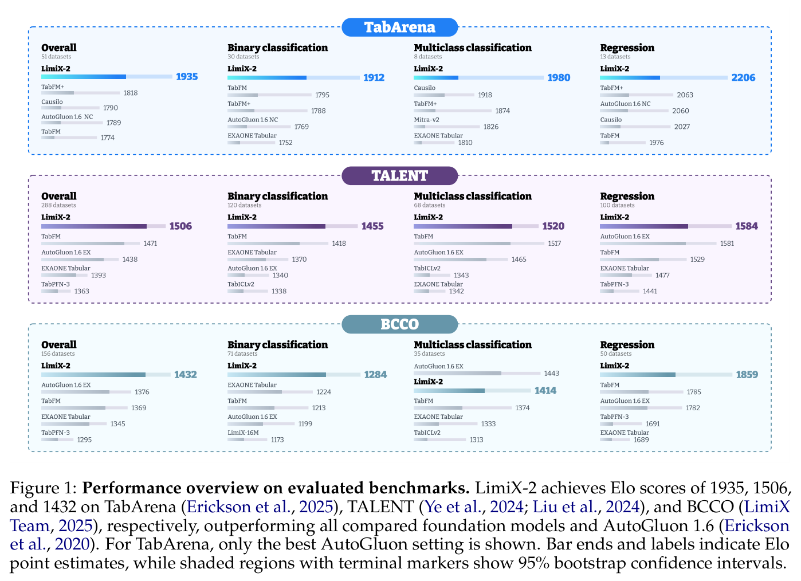
通向通用机器智能的进展可以围绕三个互补前沿展开：语言、物理世界和结构化数据（LimiX Team, 2025）。大规模 next-token 预训练和后训练，使大语言模型（LLMs）能够遵循指令、使用工具，并对文本和视觉输入进行推理（Ouyang et al., 2022; Schick et al., 2023; Team et al., 2023; Guo et al., 2025）。具身 agent 和世界模型通过学习对环境建模并与之交互，追求物理世界智能（Ha & Schmidhuber, 2018; Kim et al., 2024）。相比之下，针对结构化数据的通用学习与推理仍相对不够成熟。
结构化数据支持医疗（Johnson et al., 2016）、金融（Gu et al., 2020）和科学发现（Baldi et al., 2014）中的预测与决策。对于表格预测，gradient 提升树（Chen & Guestrin, 2016; Ke et al., 2017; Dorogush et al., 2018）、深度神经网络（Gorishniy et al., 2021; 2024）及自动化集成流水线（Erickson et al., 2020）已取得很强的任务特定性能。然而，这些方法通常需要针对每个数据集单独进行训练和模型选择，任务之间的知识复用有限。这推动了基础模型的发展：通过预训练从多样的数据集中学习，并迁移到新的预测任务。
出于这一缺口，我们倡导发展大结构化数据模型（LDMs）1：用于结构化数据推理的大规模预训练模型。我们以三个特征界定 LDMs：（i）在覆盖广泛任务分布的大规模数据上预训练；（ii）对结构化变量采用统一建模范式，无需任务特定设计；（iii）在推理时无需任何模型更新即可执行新任务。分类和回归是表格数据推理的典型实例，但并未穷尽此类任务的选择。
一类工作使用先验数据拟合网络（Prior-Data Fitted Networks，PFNs），在合成任务上预训练表格预测器（Müller et al., 2021; Hollmann et al., 2022; 2025）。后续模型，包括 TabICL（Qu et al., 2025; 2026）、TabFM（Kong & Das, 2026）和 Mitra（Zhang et al., 2025; Tao et al., 2026），遵循这种在合成任务上预训练以执行监督式上下文预测的方式。在标准监督形式中，PFNs 近似 \(p(y\mid x,D_{\mathrm{context}})\)，即给定查询特征 \(x\) 和带标签上下文集合时，指定目标 \(y\) 的后验预测分布（Hollmann et al., 2022）。这使模型能够通过上下文学习在新数据集上预测，无需更新参数。然而，在每个任务内部，直接监督仅限于预测单个目标列，而没有显式建模所有变量的联合分布，这可能显著限制其在各种数据推理任务上的能力。
我们提出上下文机制网络（CMNs），这是一种结构化数据智能的新范式，将建模重点从指定目标转移到变量之间的预测依赖系统。与 PFNs 不同，CMNs 从同一数据集上的多个条件预测任务中学习，利用上下文捕获这些任务共享的依赖，并以 \(p(x,y\mid D_{\mathrm{context}})\) 的联合依赖结构为目标。因此，监督式预测成为一个更广泛框架的特例，该框架根据可用证据推断未观测量。
这一范式建立在 LimiX 引入的上下文条件建模原则之上（LimiX Team, 2025）。我们在 LimiX-2 中实例化 CMNs，并通过模型和数据扩展推进这一设计。预训练使用上下文条件掩码建模（CCMM）（LimiX Team, 2025），在不同观测模式下整合目标预测与特征重建。通过跨变量组织监督，CCMM 将变量间推断作为显式预训练目标，而非辅助能力。这为在单个预训练模型内执行监督式预测、缺失值插补和更广泛的条件推理提供了统一基础。
LimiX-2 改进了 LimiX 基于 transformer 的架构（Vaswani et al., 2017; LimiX Team, 2025），同时保留单元格级表示。其预训练完全使用由基于结构因果模型（SCMs）（Pearl et al., 2003）的扩展生成引擎产生的合成数据集。与前代相比，该引擎覆盖更广泛的图结构、函数机制和观测过程。我们的评估证明了 CMN 范式的有效性：单个预训练 LimiX-2 模型无需任务特定参数更新，即可支持分类、回归、缺失值插补以及因果发现。
我们在表格机器学习社区广泛采用的三个基准——TabArena、TALENT 和 BCCO——上实证评估 LimiX-2 模型的预测性能。这些基准覆盖广泛的样本规模、特征维度、类别数量、分类与数值特征比例、缺失情况以及样本与特征比例。结果表明，LimiX-2 模型优于当前模型，包括表格基础模型和针对每个数据集专门训练的传统模型。尤其值得关注的是，LimiX-2 超过了 TabFM，尽管其模型（接下页）
1 本报告中，LDMs 始终指大结构化数据模型。
参数规模仅为其四分之一。此外，我们还在若干典型因果发现数据集上进行因果骨架恢复评估。结果表明，LimiX-2 优于其他表格基础模型、基于树的特征重要性方法和专门的因果发现方法，说明其特征 attention 编码了因果结构信息。
LimiX-2 延续前代的单元格级设计（LimiX Team, 2025）：它不在行级压缩特征信息，而是将每个单元格编码为独立表示2，以支持跨变量的条件推理。因此，同一行内特征间的局部关系可以直接建模，而数据集级统计量可以从上下文中的对应单元格推导。与将整行压缩为单个向量的表示相比，单元格级表示能够更好地保留表格数据的细粒度结构。
在此基础上，LimiX-2 在更大规模上实现单元格级建模。每个单元格必须保有自身表示，而掩码预测进一步要求这些向量在不同可见性模式下产生一致的条件分布。增加参数预算，是为了让每个单元格具有更丰富的表示空间，并更稳定地捕获跨列和跨样本的细粒度关系。额外容量并不是统一用于增加宽度倍数，而主要分配给后续任务路径，由这一路径组织预测所需的证据。
假设一张表有 \(N\) 行和 \(F\) 列，我们将第 \(i\) 行、第 \(j\) 列的原始单元格记为 \(x^R_{i,j}\)，将第 \(i\) 行的原始目标记为 \(y_i^R\)。首先将每个原始单元格 \(x^R_{i,j}\) 映射到特征表示空间 \(x_{i,j}\in\mathbb{R}^d\)。在前一版本 LimiX 中，LimiX-16M 使用 \(d=192\)（LimiX Team, 2025），LimiX-2M 使用 \(d=96\)（Wang et al., 2026b）。LimiX-2 将 embedding 维度扩展为 \(d=256\)。缺失单元格共享一个可学习 embedding，而列身份由区分性特征编码（DFE）单独提供。
\[x_{i,j}=\begin{cases}E_{\mathrm{miss}},& x^R_{i,j}\text{ 缺失},\\E_{\mathrm{num}}(x^R_{i,j}),&\text{其他情况}.\end{cases}\]
\(E_{\mathrm{num}}\) 是采用 RMSNorm（Zhang & Sennrich, 2019）和 GELU（Hendrycks & Gimpel, 2016）的两层 MLP。\(E_{\mathrm{miss}}\) 是所有缺失单元格共享的一个可学习向量，与列索引和类型无关。因此，完整特征表示张量可记为 \(x\in\mathbb{R}^{N\times F\times d}\)。
目标根据任务类型编码为 \(y_i\in\mathbb{R}^{Kd}\)（LimiX-2 设置 \(K=4\)）：数值回归目标经由编码器 \(E_{\mathrm{num}}^Y\) 映射，分类任务的分类目标则经由正交初始化的 embedding 表 \(E_{\mathrm{cat}}^Y\) 映射。上下文行保留其观测标签，而每个查询行的目标位置填入可学习的 MASK embedding。LimiX 对每个样本将任务 embedding 作为一个整体使用，LimiX-2 则将该 embedding 分成 \(K\) 个任务 embedding 槽，每个槽的维度为 \(d\)。形式上，
\[y_i=(y_{i,1},\ldots,y_{i,K}),\qquad y_{i,k}\in\mathbb{R}^d.\]
此外，四个任务 embeddings 中的每一个都加上任务类型 embedding \(E_{\mathrm{type}}(\tau)\)，其中 \(\tau\in\{\mathrm{cls},\mathrm{reg}\}\)。
在 LimiX-2 中，每个特征共享同一个数值 MLP，因此具有相似边缘分布的不同列，仅凭其数值表示无法区分。所以需要显式的列身份。
LimiX-2 采用低秩 DFE 产生列身份表示。第 \(j\) 列对应一个 \(s\) 维编码 \(u_j\in\mathbb{R}^s\)，其中默认 \(s=d/4\)。变换矩阵 \(E\in\mathbb{R}^{s\times d}\) 随后将这些编码映射到 embedding 空间，映射后的编码（即列身份 embedding）与特征表示相加。
2 为简洁起见，本报告交替使用“表示”和“embedding”这两个术语，二者指同一概念。
列身份 embedding \(e_j\) 区分各列，却不编码顺序上的邻近性：当列与其编码一起置换时，attention 不应依赖偶然的排列顺序。低秩将列身份限制在紧凑子空间中，使各列之间能够共享统计强度。由于表示维度设置为 \(d=256\)，高于前代 LimiX，模型更容易记住列索引捷径。因此，将列身份压缩成 \(s\) 维编码，可约束模型识别列而非位置。
主干仍由双轴 transformer 块堆叠而成：特征轴块对行内的变量关系建模，样本轴块使用上下文样本为当前表形成先验。在 LimiX 中，特征轴 attention、样本轴 attention 和前馈网络（FFN）在块内共享（LimiX Team, 2025）。LimiX-2 保留这种二维分解，但不再让特征和任务表示经过相同的计算路径。模型架构见图 2。我们将第 \(l\) 个双轴 transformer 块输出的表示记为 \(x_{i,j}^{(l)}\) 和 \(y^{(l)}\)。具体而言，\(x_{i,j}^{(0)}\) 与 \(y_i^{(0)}\) 是初始 embedding 组件的原始表示。形式上，\(x_{i,j}^{(0)}=x_{i,j}\)，\(y_i^{(0)}=y_i\)。
样本轴 attention。 对每个双轴 transformer 块，首先将前一块产生的表示送入样本轴 attention 组件。样本轴 attention 组件在各个特征位置和目标位置跨样本传播信息。对于目标位置，LimiX-2 先将任务 embeddings 拼接成一个统一表示，再送入 attention 过程，
\[y_i^{(l-1)}=(y_{i,1}^{(l-1)},\ldots,y_{i,K}^{(l-1)})\in\mathbb{R}^{Kd}.\]
在 attention 组件中，上下文行相互可见，而查询行只能关注上下文。query/key/value 映射函数在各特征之间共享，但不在特征与目标之间共享。因此，查询预测仅依赖该样本自身的特征和上下文，不依赖同一 batch 中还有哪些其他测试样本。计算完成后，目标表示重新拆分成 \(K\) 个 embeddings。第 \(l\) 个样本轴 attention 产生的特征和目标中间表示分别记为 \(\widetilde{x}_{i,j}^{(l)}\) 与 \(\widetilde{y}_i^{(l)}\)。
非对称特征轴 attention。 特征表示可以关注目标及其他特征表示，而目标表示只能关注特征表示。形式上，
\[x^{(l)}=\operatorname{Attn}^{\mathrm{feat}}_X\big(Q_X(\widetilde{x}^{(l)}),K_X([\widetilde{x}^{(l)},\widetilde{y}^{(l)}]),V_X([\widetilde{x}^{(l)},\widetilde{y}^{(l)}])\big),\]
\[y^{(l)}=\operatorname{Attn}^{\mathrm{feat}}_Y\big(Q_Y(\widetilde{y}^{(l)}),K_Y(\widetilde{x}^{(l)}),V_Y(\widetilde{x}^{(l)})\big),\]
其中 \(\operatorname{Attn}^{\mathrm{feat}}_{X/Y}(\cdot,\cdot,\cdot)\) 是特征／目标表示的多头 attention 组件，\(Q_{X/Y}(\cdot)\)、\(K_{X/Y}(\cdot)\) 和 \(V_{X/Y}(\cdot)\) 分别为特征与目标表示 attention 的 query、key 和 value 映射函数。特征表示 attention 与目标表示 attention 的 Q/K/V 映射函数不共享，因此模型会在混合流中隐式区分它们的角色。
独立 SwiGLU。 共享 MLP 被 gated FFN（Shazeer, 2020）替代，特征表示和目标表示分别使用独立实例。形式上，
\[\operatorname{SwiGLU}(z)=W_o[\operatorname{SiLU}(W_gz+b_g)\odot(W_vz+b_v)]+b_o,\]
其中 \(W_{g/v}\) 与 \(b_{g/v/o}\) 是可学习投影矩阵和偏置参数。
特征表示的 FFNs 在 \(\mathbb{R}^{p}\) 空间中运算，目标表示的 FFNs 则在拼接后的槽空间 \(\mathbb{R}^{Kd}\) 中运算。
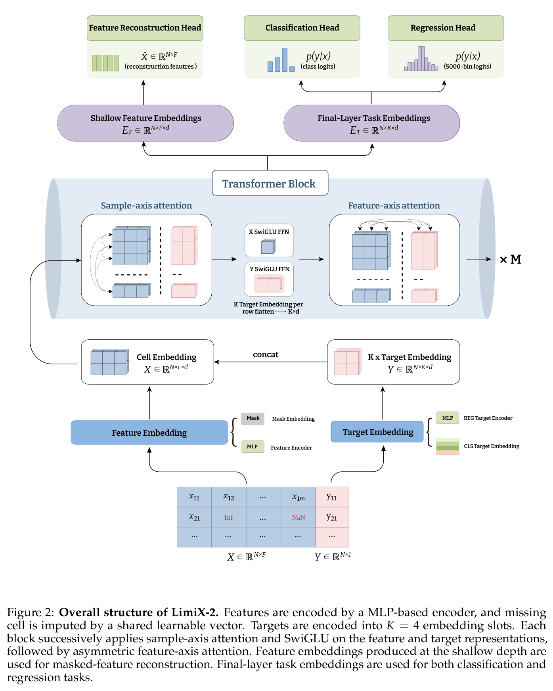
多头 attention 及其长度稳定性。 在 LimiX 中，交叉 attention 仅使用一个 key/value 头。相比之下，LimiX-2 使用所有 K/V 头。在计算 attention 分数之前，对 Q 和 K 进行归一化，以控制深层堆叠中 attention logits 的幅度。随后，各头的 queries 按一个依赖于长度的因子重新缩放：
\[s_h=(1+w_h\log n)\,\beta_h,\]
其中 \(n\) 是当前序列长度，\(w_h\) 与 \(\beta_h\) 都是可学习参数，并由 tanh 函数进行软截断。（原文句子跨页，接下页）
这在概念上与适用于可变上下文长度的长度感知 softmax 缩放有关（Chiang & Cholak, 2022; Nakanishi, 2025）。所有子层均使用预归一化 RMSNorm（Zhang & Sennrich, 2019）。
块内的计算顺序如下：独立的 X/Y 样本轴 attention、独立 SwiGLU、非对称特征轴 attention，以及残差连接。这些块堆叠为 \(M=24\) 层。
在 LimiX-2 中，不同任务（即分类、回归和掩码特征重建）的预测头连接在不同深度的输出表示上。掩码特征重建需要数据的局部细节，其预测头连接到浅层表示 \(x^{(l_{\mathrm{mask}})}\)（\(l_{\mathrm{mask}}<M\)）。相比之下，分类和回归任务从最后一层表示 \(y^{(M)}\) 解码。每个头之前都有一个独立的瓶颈后适配器（Post Adapter）：\(A_{\mathrm{mask}}\)、\(A_{\mathrm{cls}}\) 或 \(A_{\mathrm{reg}}\)。对分类和回归，后适配器分别作用于 \(K\) 个目标 embedding 槽，再将它们拼接到 \(\mathbb{R}^{Kd}\) 空间。
对于 \(C\) 类分类，预测头输出 \(\mathbb{R}^C\) 中的 logits，并使用交叉熵训练。回归的学习目标不再像 LimiX 一样采用均方误差（MSE）损失。LimiX-2 将目标范围划分为 \(B=5000\) 个有序区间，预测各区间的概率 \(p\in\Delta^{B-1}\)，并按下式得到回归值：
\[\widehat{y}=\sum_{i=1}^{B}p_i c_i,\]
其中 \(c_i\) 是第 \(i\) 个区间的中心值。
预训练旨在通过不同观测模式下的条件预测，捕获表格变量的联合依赖结构。沿用 LimiX（LimiX Team, 2025），LimiX-2 采用上下文条件掩码建模（CCMM），将目标预测与掩码特征重建结合起来。TabPFN 和 TabICL 等 PFNs 的标准监督目标在每个任务中集中于 \(p(y\mid x,D_{\mathrm{ct}})\)（Hollmann et al., 2025; Qu et al., 2025），而 CCMM 将直接监督扩展到不同变量和条件集合。
每次预训练 episode 将一张表划分为不相交的上下文与查询行集合 \(I_{\mathrm{ct}}\) 和 \(I_{\mathrm{te}}\)。上下文 \(D_{\mathrm{ct}}=(X_{\mathrm{ct}},y_{\mathrm{ct}})\) 保留可用观测，为表的边缘分布和变量间依赖提供证据。对于每个查询行 \(i\in I_{\mathrm{te}}\)，用 \(\pi_i\) 索引其被掩码的特征列。模型估计：
\[q_\theta(x_{i,j}\mid x_{i,-\pi_i},X_{\mathrm{ct}},y_{\mathrm{ct}}),\qquad i\in I_{\mathrm{te}},\ j\in\pi_i,\]
其中 \(j\) 遍历第 \(i\) 行的掩码列，\(x_{i,-\pi_i}\) 表示已观测的查询特征。查询目标 \(y_i\) 通过任务头，根据相同的条件信息预测。
沿样本轴，查询行只能关注上下文行，上下文表示的计算也无法访问查询。这阻止了查询行之间直接以及经由上下文的信息交换。因此，对固定输入表示和上下文，预测不随查询 batch 的组成变化。同一条件接口无需任务特定参数更新，即可支持分类、回归和掩码特征重建。条件似然还可用于为潜在异常条目评分。
LimiX-2 保留 CCMM，同时扩展具有独立特征和任务路径的架构。特征路径通过单元格级表示对变量间依赖建模，而任务路径使用 \(K=4\) 个 embeddings 聚合与预测有关的信息。非对称 attention 将信息从特征表示引导至任务读出。我们扩展主干并加宽任务 FFN，为在更宽的表、更长的上下文和更多样的观测模式下执行条件预测提供额外容量。
固定掩码模式会限制预训练期间遇到的条件预测任务范围。因此，LimiX-2 结合三种掩码方案，改变预测目标的粒度和可用条件信息。
掩码作用于单独条目、查询行中的选定列或成块条目，使模型接触不同粒度的预测任务。由此形成的任务，从恢复孤立数值，到预测目标列，再到重建成组缺失条目，均以其余观测和上下文集为条件。在各 episode 中交替使用这些方案，可以拓宽观测模式的覆盖范围，并抑制对单一重建设置的专门化。
对于预训练期间被掩码的每个单元格，其数值 embedding 被第 2.1 节定义的共享缺失值 embedding \(E_{\mathrm{miss}}\) 替代，并与 DFE 列编码 \(e_j\) 相加。因此，被掩码和自然缺失的单元格共享缺失性编码，同时保留列身份。所得表示经过与已观测单元格 embeddings 相同的双轴 attention 层，使模型能够整合跨列和上下文样本的证据，并通过相应输出头产生分布预测。
我们遵循 SCM 框架（Pearl et al., 2003）构建大规模预训练数据。通过改变数据生成过程不同阶段的组件，我们合成大量具有多样变量依赖、特征分布和任务属性的数据集。
继承前代 LimiX（LimiX Team, 2025），整体数据生成流水线包含五个主要阶段：超参数采样、有向无环图（DAG）生成、SCM 传播、数据采样和任务适配，如图 3 所示。在这一流水线基础上，LimiX-2 进一步扩展图结构、函数机制和变量观测过程的空间，从而增加预训练任务的结构与统计多样性。
对于每个预训练数据集，我们采样一组刻画其全局属性的超参数，包括样本规模、特征维度（分别指定连续和分类特征数量）以及任务类型（即分类或回归）。给定采样得到的样本规模，再随机抽取一个评估位置，将数据集划分为上下文部分和查询部分。每个超参数的采样分布从正态、均匀和 beta 分布等分布族中随机选择。
我们生成以层级方式描述变量间结构依赖的 DAGs。整体 DAG 由多个局部因果结构（LCSs）组成，在此实现中具体采用因果模体（causal motifs）（Barjašić et al., 2021）。每个因果模体可包含多个输入和输出节点，并编码变量之间的有向依赖，例如链、混杂和碰撞结构（Peters et al., 2017; Pearl et al., 2016）。
通过在多个粒度上递归扩展因果模体，所形成的 DAG 能同时捕获具有复杂局部拓扑的宏观和微观依赖。此外，我们允许在 DAG 上进行受拓扑约束的图变换（Maslov & Sneppen, 2002; Sanfeliu & Fu, 1983），随机选择并应用边重定向、局部路径替换和节点级结构变换等操作。这些操作在保持图无环性的同时进一步丰富局部拓扑，使生成的 DAGs 呈现多样的连通模式和信息传播路径。
SCM 的 DAG 决定变量之间的依赖，而函数机制决定这些依赖背后的统计关系。
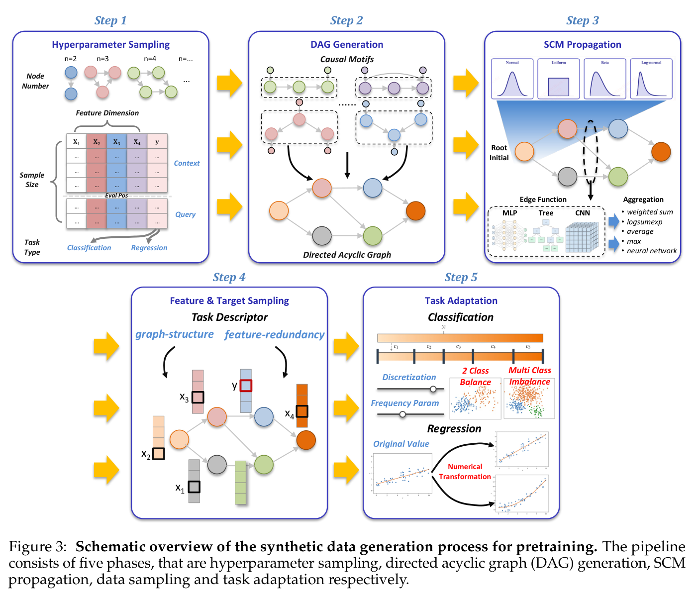
对于每个 DAG，我们首先从随机选择类型及参数的分布中采样根节点的值。随后沿 DAG 的拓扑顺序传播函数计算，确定其余节点的值。对于节点 \(X_i\)，其数值生成过程可表示为：
\[X_i=f_i\left(\{g_{i,j}(X_j)\}_{j\in\operatorname{PA}(X_i)},\epsilon_i\right),\]
其中 \(\operatorname{PA}(X_i)\) 表示 \(X_i\) 的父节点集合，\(g_{i,j}\) 是与父节点 \(X_j\) 关联的边函数，\(f_i\) 表示组合映射后父节点值的聚合函数，\(\epsilon_i\) 表示随机噪声。
LimiX-2 保留前代的三类主要边函数，包括 MLPs、CNNs 和决策树（LimiX Team, 2025）。此外，我们引入线性映射、核函数、分段函数、周期函数和乘法交互等额外机制。这些基本函数还可以组合，使 SCM 能够描述更复杂的变量关系。
对于具有多个父节点的节点，我们设计多种聚合策略，例如简单平均、加权聚合和神经聚合，产生多种形式的多变量交互。
完整的 SCM 刻画所有变量的联合状态，但实践中通常只能观测其中一部分。为使生成数据接近现实场景，我们仅提取变量子集作为样本特征和预测目标，以构造每个数据集。具体而言，LimiX-2 将变量采样表述为多属性选择问题。对于每个数据集，粗粒度的（接下页）
任务描述符根据所分配的子图结构与特征冗余设计构建。随后，通过多目标选择机制筛选候选任务，确保所得任务不仅在图结构上存在差异，还覆盖具有多样统计属性的预测问题，从而拓宽最终预训练任务在结构复杂度和统计特征两方面的覆盖范围。
我们对特征和目标变量应用随机观测变换以进行任务适配。这类变换包括线性缩放、单调非线性变换、对数变换和指数变换，而且多个算子可以随机组合。对目标变量，变换根据每个数据集的任务类型（分类或回归）指定。对于分类任务，由于初始目标变量通常连续，我们通过随机离散化将其转换为分类目标：LimiX-2 将目标的数值空间随机划分为若干区间，并改变类别频率和离散化参数，使不同合成数据集产生具有不同类别数和类别不平衡程度的分类任务。对于回归任务，目标可以经历随机尺度变换，以及偏度和尾部行为的调整，从而覆盖具有多样函数关系的连续预测任务。
本节在多个公开表格基准上全面评估 LimiX-2 的预测性能，这些基准包括多样的现实分类和回归任务。如图 1 所示，LimiX-2 在三个基准上均取得最高 Elo 评分。我们还在因果发现基准上评估 LimiX-2 的因果骨架恢复能力。结果显示，基于 LimiX-2 特征 attention 恢复的骨架，优于其他表格基础模型、基于 XGBoost 的特征重要性方法和专门的因果发现方法。
基准。 评估采用三个广泛使用的基准：TabArena（Erickson et al., 2025）、TALENT（Ye et al., 2024; Liu et al., 2024）和 BCCO（LimiX Team, 2025）。TabArena 侧重实践协议下的预测性能，TALENT 评估跨多样任务类型的泛化，BCCO 评估困难及不完整数据集上的鲁棒性。这些基准从预测性能、泛化、可扩展性和鲁棒性方面对 LimiX-2 进行广泛评估。
基准协议。 表 1 总结表格基准中的任务类型组成，以及本技术报告报告的主要评估指标。TabArena、TALENT 和 BCCO 的详细评估协议如下。
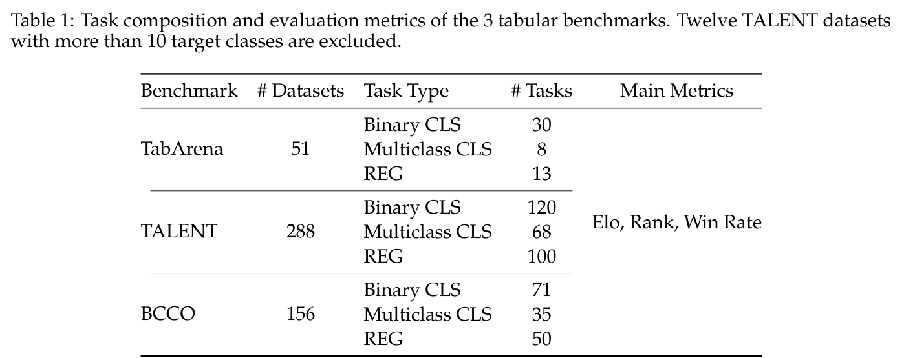
对于已整合进 TALENT 库的模型，我们使用其默认配置，包括模型特定超参数设置。对于 EXAONE Tabular（Eo et al., 2026）、Xiaomi-TabLDM（Wang et al., 2026a）和 Mitra-v2（Tao et al., 2026）等表格基础模型，我们遵照各自官方仓库规定的预处理和推理流程实现评估，不调整超参数，以实现公平比较。
对每个数据集，分类任务按准确率排名，回归任务按 RMSE 排名。每个随机种子分别排名，先在种子间平均排名，再对各数据集等权平均，得到平均排名。除了排名，我们还遵循 TabArena，将各数据集结果转换为两两比较并拟合 Bradley–Terry Elo 模型，以 Random Forest 的 1000 分为锚点来聚合模型性能。所报告的 Elo 展示基于 2000 轮 bootstrap 的 95% 置信区间，使用 2.5% 和 97.5% 分位数。
基线。 我们将 LimiX-2 与一系列最先进的基线模型比较，包括基于树的模型、自动机器学习框架、神经网络和近期表格基础模型。
总体性能。 图 4 和表 2 报告完整 TabArena 基准上的性能。表中报告的全部四项预测指标中，LimiX-2 均在比较方法中排名第一。它取得最高 Elo 分数 1935，未舍入时比 Elo 第二名 TabFM+ 高 117.4 分，可提升度为 3.3%，而 TabFM+ 为 6.2%。与此一致，LimiX-2 的平均排名为 5.5，TabFM+ 为 9.0；其聚合获胜数为 18.9，TabFM+ 为 5.3，相当于约 3.6 倍的聚合获胜数。
胜率将与对应表中所有其他方法的两两比较取平均，先对每个数据集内部的评估划分平均，再对各数据集等权平均，平局计为半次获胜。
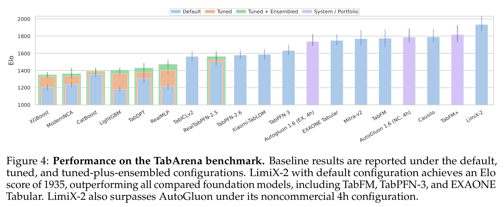
聚合获胜数则为每个划分中表现最好的方法分配一个单位的积分，若多个方法并列获胜则均分，在各数据集内部平均，再对数据集求和。表中 Elo 点估计舍入为整数。Elo 差值和相对比较根据未舍入结果计算。
分类性能。 表 3 报告 38 个分类数据集上的结果。LimiX-2 在表中报告的全部四项预测指标中均排名第一。其 Elo 为 1917，可提升度为 4.3%，平均排名为 6.0，聚合获胜数为 10.6，平均两两胜率为 94.5%。这些结果说明其在分类任务上具有很强的聚合性能。
回归性能。 表 4 报告 13 个回归数据集上的结果。LimiX-2 再次在表中报告的全部四项预测指标中排名第一，取得 Elo 2206、可提升度 0.6%、平均排名 3.8、聚合获胜数 8.3 和平均两两胜率 96.9%。TabFM+ 以 2063 的 Elo 排名第二，随后是 2060 的 AutoGluon 1.6（非商用，4 小时）。这些结果说明其在回归子集上表现很强。
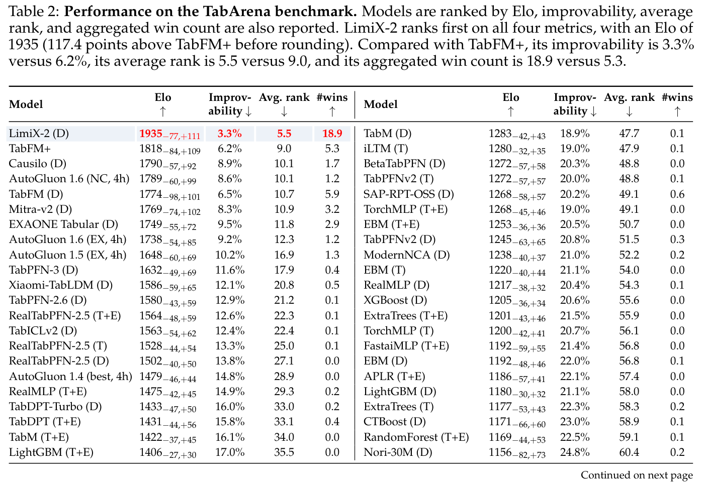
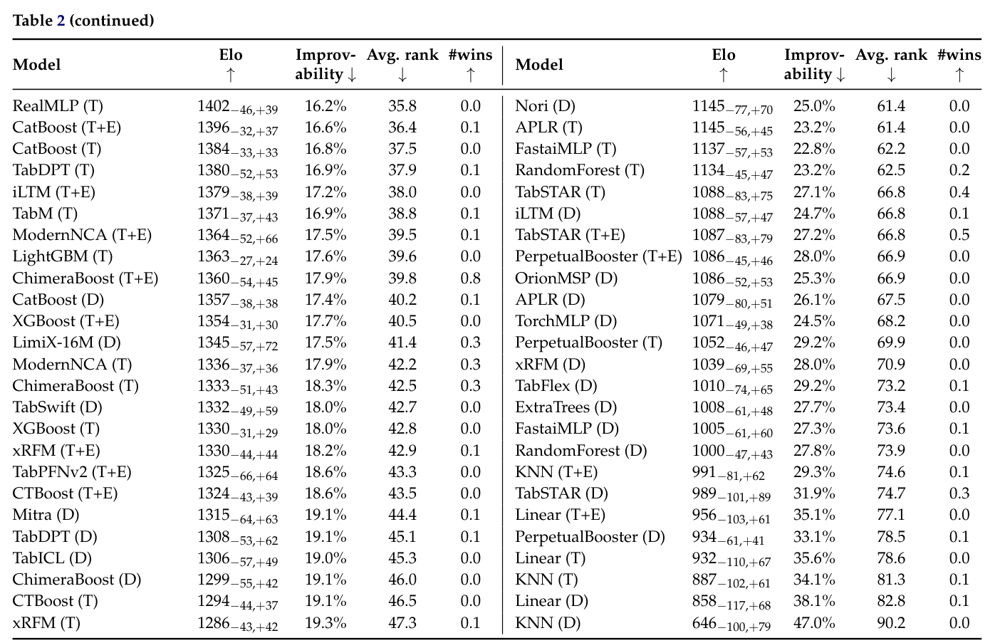
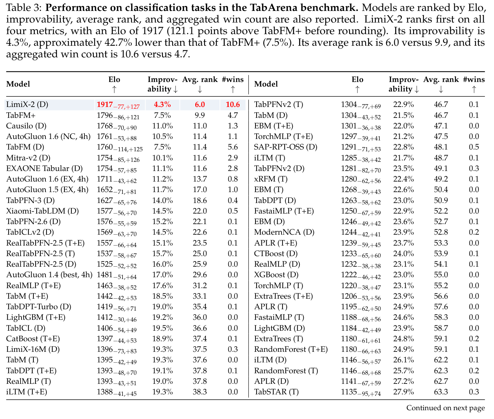
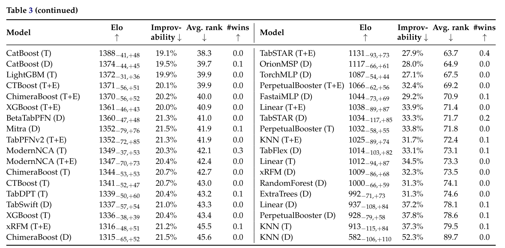
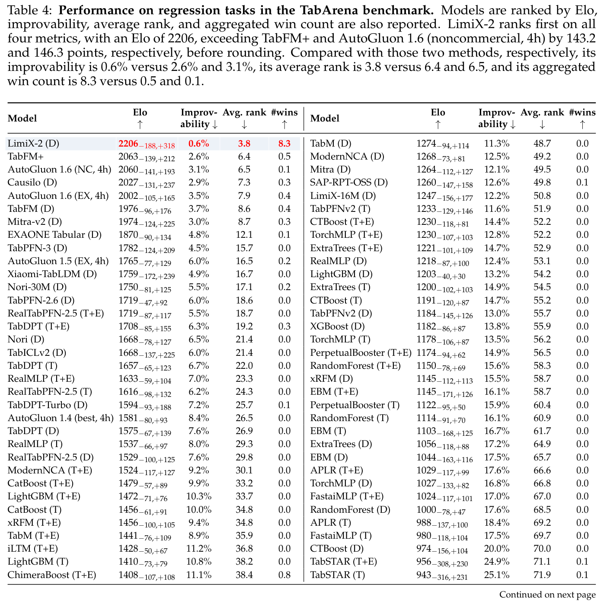
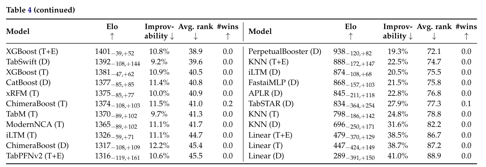
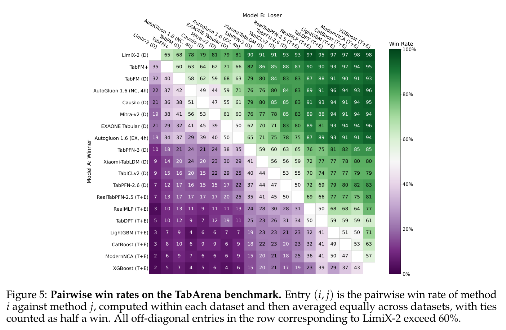
两两比较。 图 5 报告所展示方法及配置的两两胜率。每个条目 \((i,j)\) 先计算各数据集内方法 \(i\) 相对方法 \(j\) 在划分级的胜率，平局计为半次获胜，再对数据集等权平均。LimiX-2 对应行的所有非对角条目均超过 60%，说明其对每个展示的竞争方法都具有多数胜率。具体而言，其对 TabFM+、TabFM、AutoGluon 1.6（非商用，4 小时）和 EXAONE Tabular 的胜率分别为 65.2%、67.7%、78.3% 和 79.0%。对 Causilo（Nums AI Inc., 2026）的胜率为 79.3%，对 Mitra-v2 为 81.3%。对其他展示的表格基础模型（包括 Xiaomi-TabLDM），其胜率均超过 90%；对展示的经过调参并集成的树模型和神经网络基线，胜率至少为 95%。
总体性能。 表 5 报告 TALENT 基准上的性能。LimiX-2 在全部五个评估类别中取得最高 Elo，同时在比较方法中具有最低的总体可提升度和最大的聚合获胜数。其总体 Elo 达到 1506，分别超过 TabFM 和 AutoGluon 1.6（EX，4 小时）35 分和 68 分。可提升度降至 6.75%，而 TabFM 为 9.17%，相当于相对降低 26.4%。LimiX-2 的聚合获胜数还达到 84.3，TabFM 为 50.1，约为其 1.7 倍。与这些聚合结果一致，图 6 显示 LimiX-2 在（接下页）
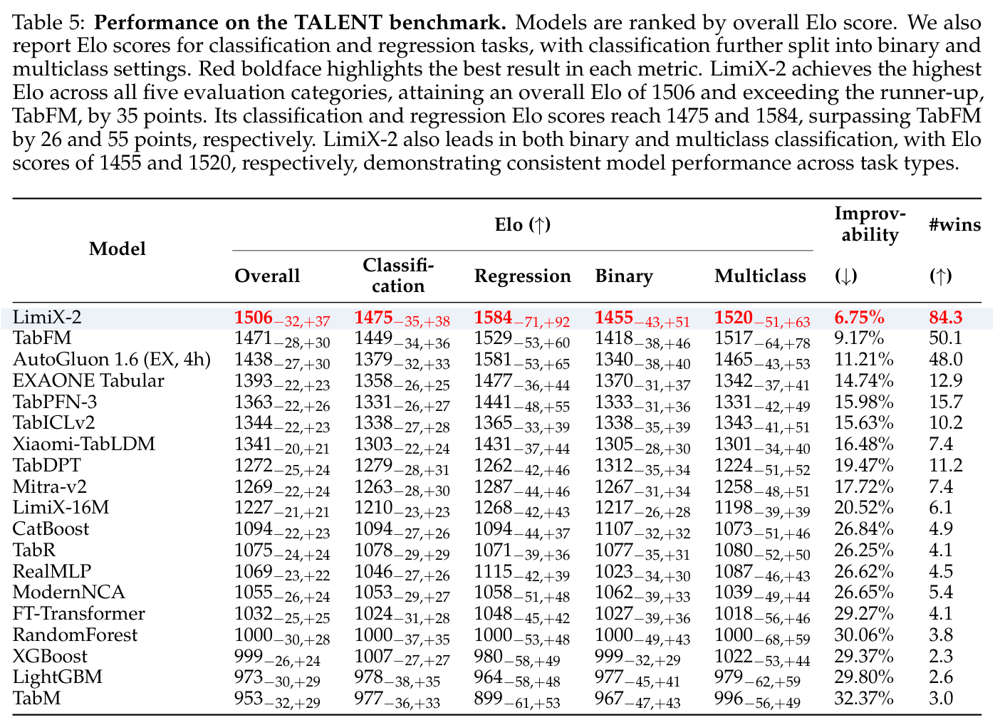
二分类、多分类和回归中均取得最低平均排名。这些结果共同表明，其强劲的相对性能从 TabArena 延伸到了 TALENT 基准。
分类性能。 表 5 显示，LimiX-2 在分类任务上的 Elo 为 1475，超过 TabFM 26 分。这一优势在二分类和多分类中均成立，其 Elo 分别为 1455 和 1520，而 TabFM 分别为 1418 和 1517。图 6 提供了基于准确率的数据集级补充比较，LimiX-2 在二分类和多分类上的平均排名最低，分别为 4.62 和 3.91。Elo 与平均排名评估结果一致，表明在这两种任务设置下均具有持续强劲的分类性能。
回归性能。 如表 5 所示，在回归任务上，LimiX-2 取得最高 Elo 1584，略领先于 AutoGluon 1.6（EX，4 小时）的 1581，并分别超过 TabFM 和 EXAONE Tabular 55 分和 107 分。图 6 提供基于 RMSE 的补充比较，其中 LimiX-2 再次取得最低平均排名 3.88。Elo 和数据集级平均排名上的一致优势，进一步支持 LimiX-2 强劲的回归性能。
两两比较。 图 7 报告各评估任务的两两胜率。每个条目 \((i,j)\) 表示方法 \(i\) 优于方法 \(j\) 的任务百分比。LimiX-2 对 TabFM 的任务胜率为 57%，对 AutoGluon 1.6（EX，4 小时）为 62%，对 EXAONE Tabular 为 75%。对其余表格基础模型，胜率为 74%–85%；对其余基线则达到 89%–96%。总体上，LimiX-2 对每个竞争方法的胜率均超过 50%，说明其领先的聚合性能建立在广泛的两两优势之上，而非收益集中于少量数据集。
元特征子组。 图 8 考察模型排名如何随数据集规模和维度变化。在大多数样本规模和特征数量范围中，LimiX-2 的拟合排名保持在最低的一组，在中到大型数据集上尤其强。在不同特征数量下，其拟合排名也持续保持竞争力，而且总体上随维度增加而改善。这些趋势说明，LimiX-2 的聚合优势在样本数和特征数差异很大的数据集上仍得到保留，并非由狭窄的数据集范围驱动。
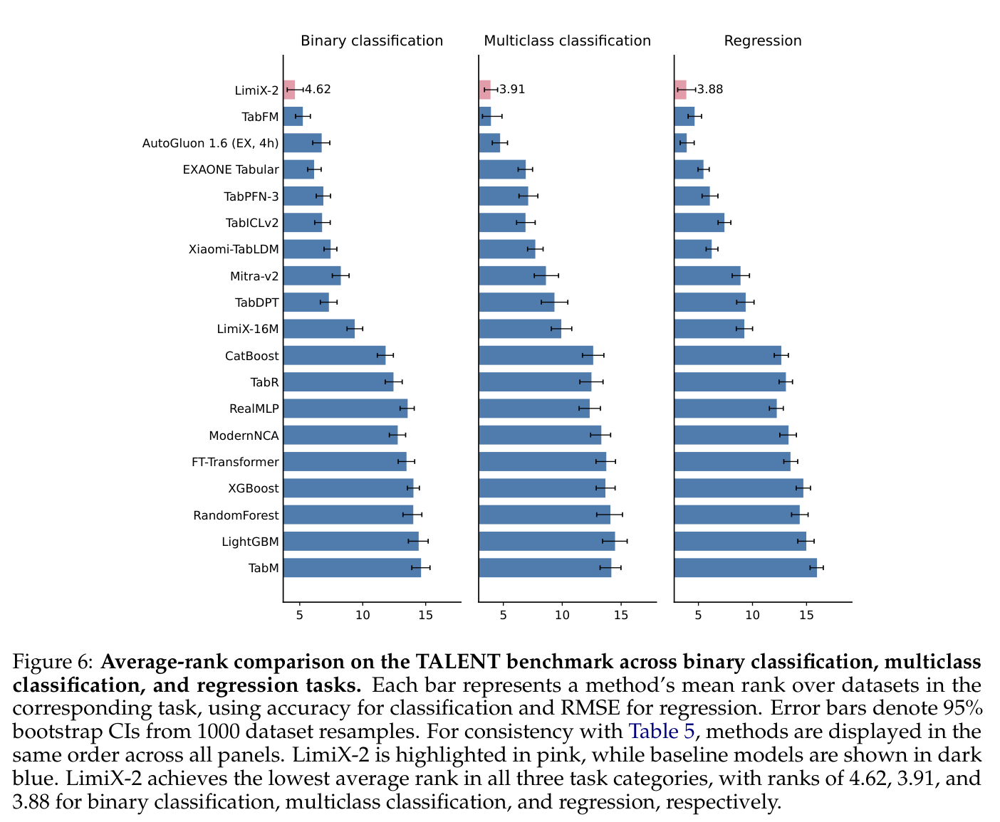
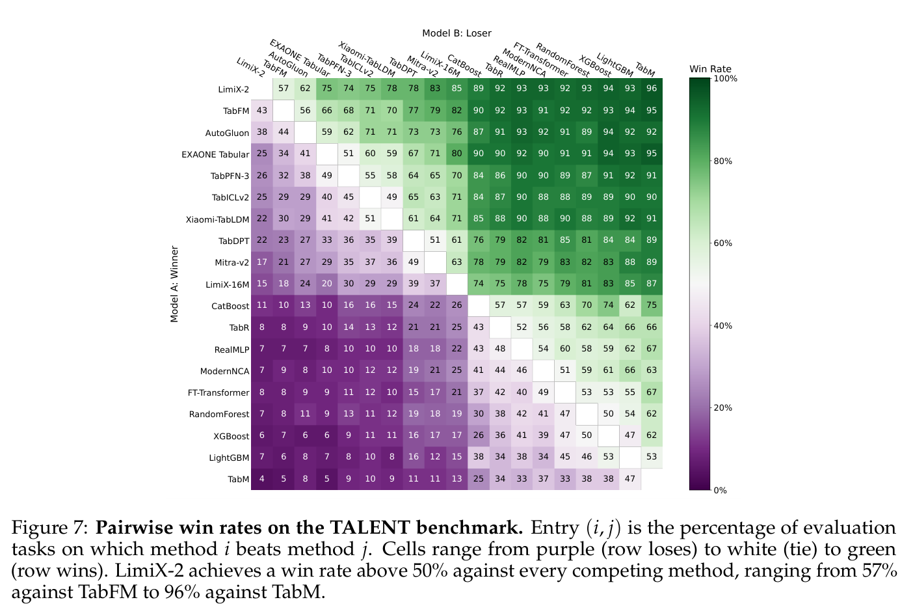
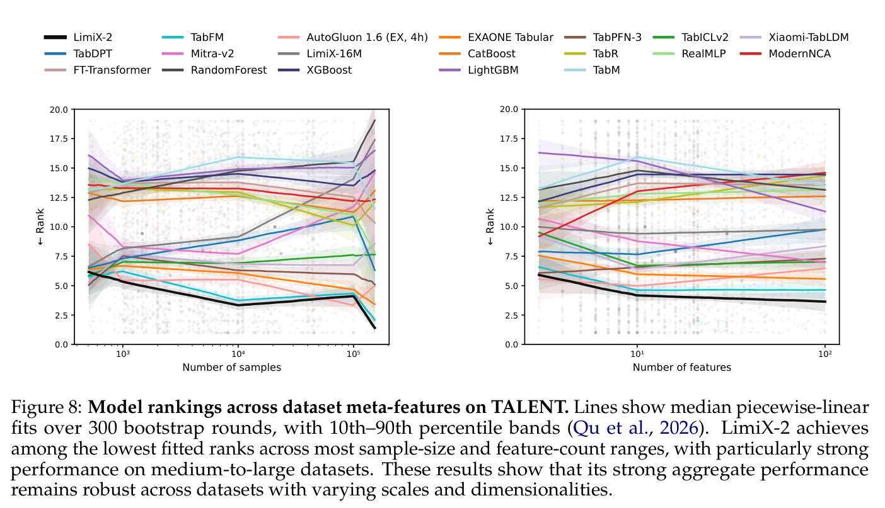
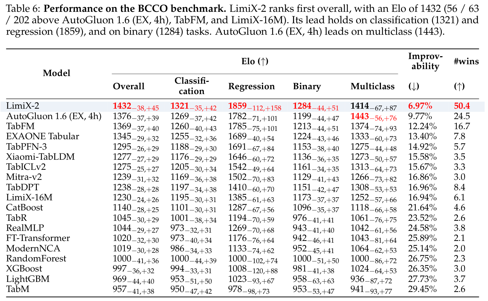
总体性能。 表 6 报告 BCCO 基准上的性能。在比较方法中，LimiX-2 取得最高总体 Elo，同时具有最低总体可提升度和最大聚合获胜数。其总体 Elo 达到 1432，分别超过 AutoGluon 1.6（EX，4 小时）、TabFM 和 LimiX-16M 56 分、63 分和 202 分。可提升度降至 6.97%，而 TabFM 为 12.24%，相当于相对降低 43.1%。此外，LimiX-2 的聚合获胜数为 50.4，而 TabFM 为 16.7，约为其 3.0 倍。这些结果证明，LimiX-2 在 BCCO 基准的异质任务中具有领先的预测性能。
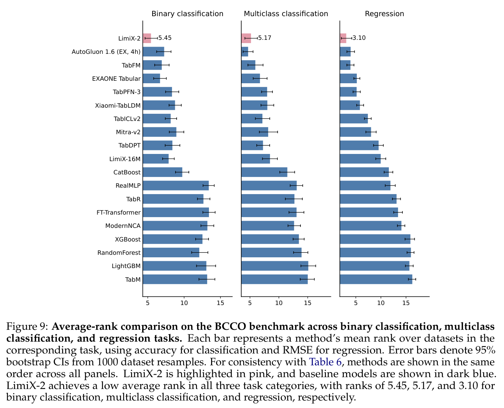
分类性能。 表 6 报告 LimiX-2 的分类 Elo 为 1321，比 AutoGluon 1.6（EX，4 小时）高 52 分，比 TabFM 高 61 分。它还取得最高二分类 Elo，达到 1284。在多分类上，LimiX-2 的 Elo 为 1414，仍极具竞争力，比 TabFM 高 40 分，与最好结果相差 29 分。图 9 提供基于准确率、覆盖 71 个二分类和 35 个多分类数据集的补充比较。在二分类上，LimiX-2 取得最佳平均排名 5.45，随后是 EXAONE Tabular 的 6.69 和 TabFM 的 6.93。在多分类上，LimiX-2 取得具有竞争力的平均排名 5.17，领先 TabFM 的 5.93，与最好结果相差 0.49。Elo 与基于准确率的排名一致，说明 LimiX-2 在二分类和多分类预测任务上均具有很强的分类能力。
回归性能。 如表 6 所示，在回归上 LimiX-2 的 Elo 为 1859，比 TabFM 高 74 分，比 TabPFN-3 高 168 分。图 9 比较了 50 个回归数据集上基于 RMSE 的平均排名。LimiX-2 取得最低平均排名 3.10，随后是 TabFM 的 3.93 和 AutoGluon 1.6（EX，4 小时）的 3.97；TabPFN-3 和 EXAONE Tabular 分别为 5.16 和 5.20。相较平均排名为 9.96 的 LimiX-16M，它也有显著改善。LimiX-2 在 Elo 和基于 RMSE 的排名上均领先，巩固了在 TabArena 和 TALENT 上已确立的强劲回归性能，证明其对 BCCO 基准各回归任务的有效性。
两两比较。 图 10 报告评估任务的两两胜率。每个条目 \((i,j)\) 表示方法 \(i\) 优于方法 \(j\) 的任务百分比。LimiX-2 的非对角数值为 62%–94%，表明其在多数任务上击败每个基线。具体而言，LimiX-2 对 TabFM 的任务胜率为 65%，对 EXAONE Tabular 为 67%。对其他表格基础模型，胜率在 73%–79% 之间。对树模型和神经基线，胜率更高，为 81%–94%。这些两两结果与总体 Elo 和平均排名结论一致，确认 LimiX-2 在各类模型之间保持一致的预测优势。
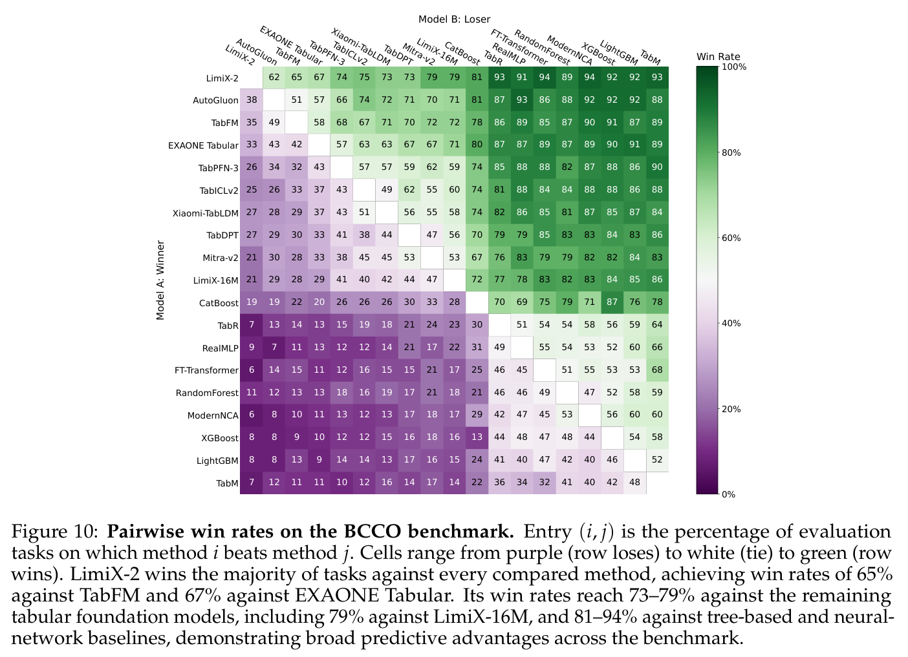
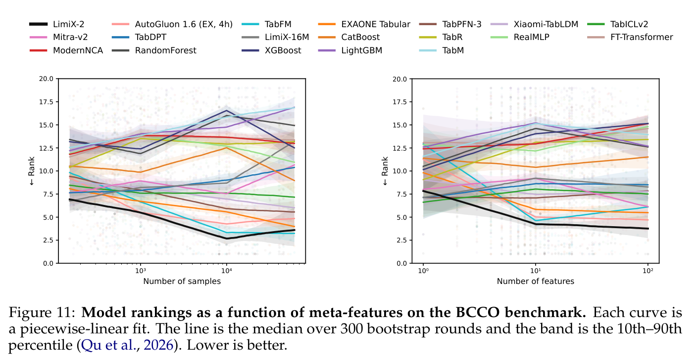
元特征子组。 图 11 考察模型排名随数据集特征的变化，包括样本规模和特征维度。LimiX-2 在样本规模范围的大部分区域保持在最低拟合排名的一组，在约 \(10^4\) 个样本时相对表现尤其强。它在约 10–100 个特征的数据集上也取得较低拟合排名，突出其在广泛特征维度范围内的有效性。这些结果确定了其在多种数据集特征下的优势，并补充了 LimiX-2 领先的聚合性能。
我们通过探查表格基础模型内部特征 attention 分数编码的结构信息，评估其因果感知能力。具体而言，我们研究特征 attention 分数能否区分因果关系（即因果图中相邻）与非因果关系（即不相邻）。预测目标变量时，具有真正因果感知能力的模型应将 attention 集中于与目标因果相邻的特征。因此，对相应 attention 分数设定阈值，就能识别特征与目标之间是否存在因果边：模型的因果感知越强，这种分离所诱导的因果骨架应越准确。因此，我们将因果骨架恢复性能作为表格基础模型因果感知能力的操作性度量。
基准协议。 给定 \(F\) 个变量的观测数据，我们依次指定每个变量 \(X_j\) 为预测目标，其余变量作为表格基础模型的特征。由于单元格级表示的设计，对保留单元格级表示的模型，我们可以测量每个特征独有的特征 attention，作为该特征与目标之间的因果关系强度。然而，TabPFN-3、TabICLv2、TabFM 和 Xiaomi-TabLDM 等表格基础模型将特征信息聚合为行级表示以预测目标，因此目标所关注的特征 attention 分数只能在特征组级别计算。对这些模型，我们将每个特征组的 attention 分数均匀分配给其成员特征，得到因果关系强度度量。基于树的 XGBoost 也可以产生特征重要性分数（Chen & Guestrin, 2016），我们采用基于 gain 的变体作为其因果强度度量。通过对总体分数分布设置阈值、保留分数较高的变量关系，得到因果图的稀疏因果骨架 \(\widehat{G}_{\mathrm{skel}}\)。对于因果发现方法，我们将其产生的有向因果图转换成无向图，获得因果骨架。使用骨架 F1 分数和结构 Hamming 距离（SHD）将估计骨架与真实骨架比较。
基线。 基线包括表格基础模型（TabPFN-3、TabICLv2、TabFM、EXAONE Tabular、Xiaomi-TabLDM）、采用基于 gain 特征重要性的 XGBoost，以及覆盖主要类别的因果发现方法：预训练／摊销式结构学习（TabCausal（Li et al., 2026）、AVICI（Lorch et al., 2022））、非线性连续优化（NOTEARS-MLP（Zheng et al., 2020）、DAG-GNN（Yu et al., 2019））、基于条件独立性约束的 PC（Spirtes et al., 2000）、基于图评分的 GES（Chickering, 2002），以及可辨识函数因果模型 LiNGAM（Shimizu et al., 2006）。
基准。 我们在六个因果发现数据集上评估：三个连续数据集和三个离散数据集。连续数据集涵盖 Sachs 蛋白质信号网络（Sachs et al., 2005）、UF 食品生产过程（Menegozzo et al., 2022）及 CausalChamber 光隧道系统（Gamella et al., 2025）。离散基准分别为用于淋巴结病理的 PATHFINDER 网络（Heckerman et al., 1992; Scutari, 2026）、用于血糖调节和胰岛素调整的 DIABETES 网络（Andreassen et al., 1991; Scutari, 2026），以及 PIGS 遗传谱系网络（Cowell et al., 1999; Scutari, 2026）。
表 7 显示，表格基础模型中的特征 attention 分数编码直接因果关系的结构信息，可以转换成因果骨架。LimiX-2 在六个数据集上的平均 F1 为 0.7972，六个数据集的 F1 均排名第一，五个数据集的 SHD 最低。这种改善表明 LimiX-2 从直接因果关系中提取预测信号，即其特征 attention 分数编码因果信息。EXAONE Tabular 以 F1 0.6591 排名第二。相比之下，在特征组级计算特征 attention 的表格基础模型，无法在细粒度上区分特征之间的因果关系强度。因此，TabFM、TabICLv2、TabPFN-3 和 Xiaomi-TabLDM 的因果骨架恢复性能显著退化，突出 CMNs 和单元格级表示对于表格基础模型因果结构感知的重要性。此外，在若干设置下，LimiX-2 恢复的骨架达到或超过专门为因果发现设计的方法，说明 LimiX-2 能有效将因果结构信息内化到其内部表示中。
面向结构化数据的基础模型，其 scaling laws 研究才刚刚开始。LimiX（LimiX Team, 2025）首次对大结构化数据模型（LDMs）开展显式 scaling-law 研究，刻画模型容量和预训练规模如何影响训练损失及下游性能。后续工作从互补的（接下页）
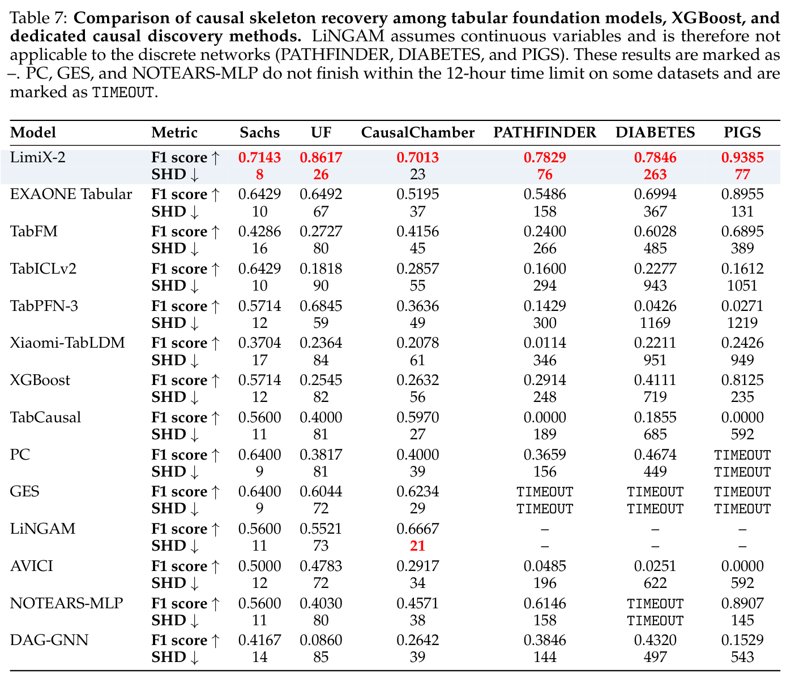
方向拓展了 LDMs 的扩展分析。PluRel 确立了关系基础模型预训练损失随合成数据库数量和训练 token 数量的幂律扩展。MaskTab 报告了对无标签数据量、特征维度和模型容量逐一考察单个轴的扩展趋势。TabPFN-3 探索了表格预测的上下文规模和推理时计算扩展（Kothapalli et al., 2026; Zheng et al., 2026; Grinsztajn et al., 2026）。在这一新兴研究方向基础上，LimiX-2 沿模型容量轴进行更细粒度、控制更严格的扩展研究，覆盖多个下游基准。
LimiX-2 在生成数据上预训练，训练语料因而可以按需扩展，而其模型规模仍远低于现代大语言模型，使受控扩展实验在计算上可管理。这一设置允许我们将模型容量作为主要扩展变量，并提出一个针对性问题：在固定的数据生成、优化和推理方案下，下游性能如何随可训练参数数量扩展？我们评估参数量从 12.5M 到 406.2M 的 LimiX-2 配置，并将拟合的扩展趋势外推到十亿参数范围。
对每个评估序列，用 \(N_i\) 表示以百万为单位的参数数量，\(E_i\) 表示观测的 Elo 分数。我们拟合以下对数线性 scaling law：
\[E_i=\alpha+\beta\log_2\left(\frac{N_i}{100}\right)+\epsilon_i.\tag{1}\]
这里，\(\alpha\) 表示 100M 参数时的拟合 Elo，而 \(\beta\) 衡量模型规模每翻倍一次的预期 Elo 增益。两个系数都在每个评估序列的六个模型规模上，通过普通最小二乘法估计：
\[\widehat{\beta}=\frac{\sum_i(x_i-\overline{x})(E_i-\overline{E})}{\sum_i(x_i-\overline{x})^2},\qquad\widehat{\alpha}=\overline{E}-\widehat{\beta}\,\overline{x},\qquad x_i=\log_2\left(\frac{N_i}{100}\right).\tag{2}\]
基线仅作参考展示，不参与 scaling-law 拟合。我们报告 \(R^2\) 和残差 RMSE 以描述拟合优度。
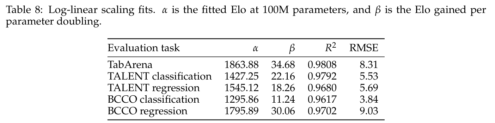
在全部五个评估序列中，下游性能随模型规模呈现明确的对数线性趋势。拟合模型的 \(R^2\) 为 0.9617–0.9808，残差 RMSE 为 3.84–9.03 Elo（表 8）。始终为正的斜率说明，增加模型容量能带来稳健收益，而斜率大小不同表明扩展回报存在显著的任务差异。
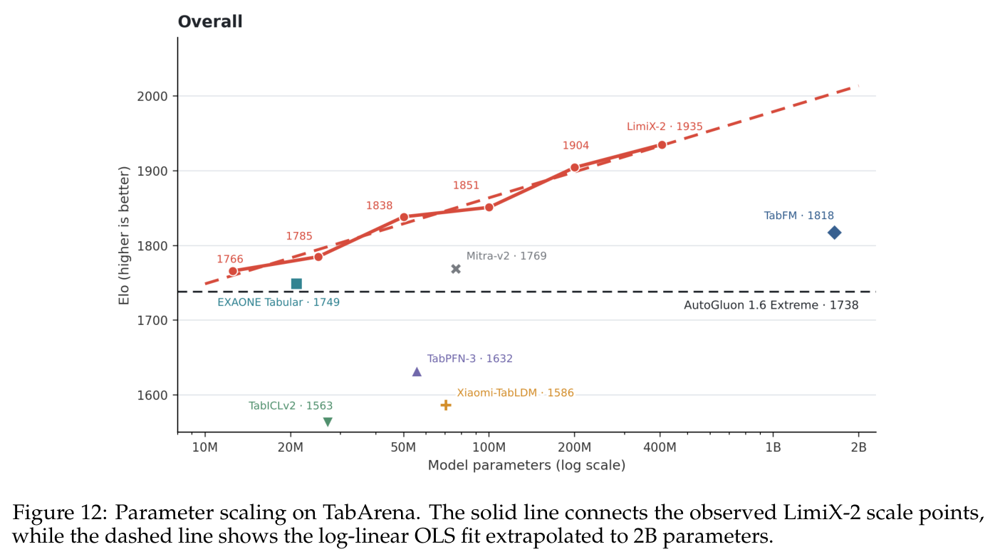
在 TabArena 上，Elo 从 12.5M 参数时的 1766 增加至 406.2M 时的 1935，模型规模增加约 32.5 倍，获得 169 Elo 增益。拟合斜率达到每次参数翻倍增加 34.68 Elo，是五个评估序列中最陡的。在 TALENT 上，同一范围内的分类和回归分别提高约 109 和 89 Elo。这一趋势泛化到不相交的 BCCO 基准集合，其中分类提高 56 Elo，回归提高 147 Elo。尤其是 BCCO 回归的扩展系数居第二位，每次翻倍增加 30.06 Elo。
在测量的参数范围内，LimiX-2 与规模相近的现有结构化数据基础模型相比也表现优异。这些比较提供了证据，说明其在报告的评估协议下具有很强的实证参数效率，尽管架构、预训练分布和训练计算量的差异，使我们无法将差距完全归因于模型设计。
外推的 2B 结果应理解为预测，而非实测性能：更大模型可能进入不同的优化或数据范围，Elo 分数也依赖基准的比较模型池。尽管如此，跨三个基准套件、分类与回归的一致扩展趋势支持一个明确结论：模型容量是一个稳健且可预测的（接下页）
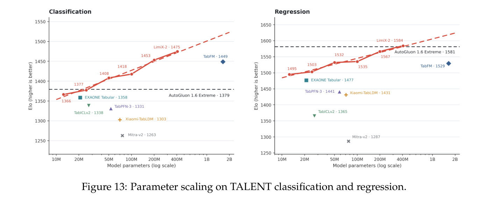
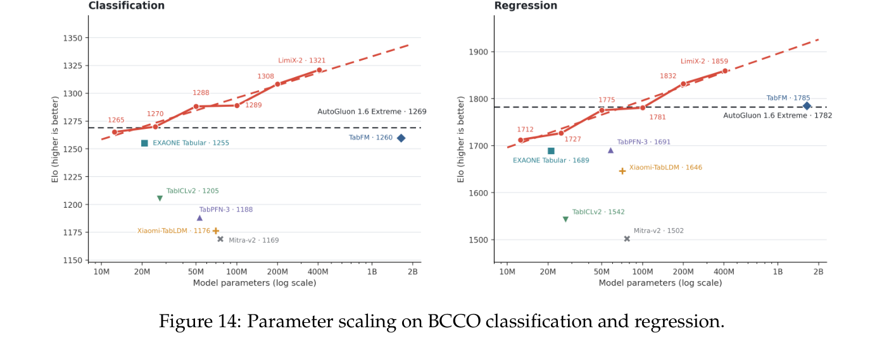
LimiX-2 扩展轴，在本研究范围内成立。直到 406.2M 参数，我们都没有观察到性能饱和的明确证据，这为将 LimiX-2 扩展到十亿参数范围提供了强有力的实证动机。
本报告倡导发展大数据模型（Large Data Models，LDMs），并指出当前主流先验拟合网络（Prior-Fitted Network，PFN）范式的一个关键局限，即局限于标签预测，因此引入上下文机制网络（CMNs），将标签预测推广到任意掩码列插补的设计范式。CMNs 使用上下文条件掩码建模（CCMM）进行训练，这一目标相比单纯标签预测提供显著更稠密的监督，并引导模型获得更强的数据推理能力。我们通过 LimiX-2 实例化这一范式：它是基于 transformer、具有单元格级表示的表格基础模型，完全在基于 SCM 的生成引擎所产生的合成数据上预训练。无需任何任务特定训练，LimiX-2 在一次前向传播中执行分类、回归、缺失值插补和因果推断。TabArena、TALENT 和 BCCO 的评估结果显示，LimiX-2 优于广泛的表格基础模型和数据集特定模型，并证明 CMNs 的优越性。
Xingxuan Zhang, Peng Cui
Gang Ren, Hao Yuan, Hao Zou, Hongze Tan, Hui Wang, Jianhao Song, Jiansheng Li, Jiayao Zhang, Jinghan Zhang, Kaifang Li, Lang Mo, Li Mao, Mingchao Hao, Nuo Xu, Rui Ding, Ruiji Zhang, Shuyang Li, Siyu Mei, Tianyang Zhang, Weiyang Mu, Yancheng Dong, Yongxian Wei, Yuan Xue, Yuanrui Wang, Yue He, Zijia Yang, Ziyun Li
Dongzhe Li, Fuqiang Wang, Jiandong Liu, Jiawei Chen, Jiaxin Du, Kaijie Cheng, Kehan Li, Lei Sun, Linjun Zhou, Ningbo Dai, Qi Wang, Renzhe Xu, Shaoxing Du, Shumeng Yang, Wang Lu, Wenjing Chu, Xiannan Huang, Xiaoyu Lin, Xing Ai, Xinyan Han, Xuanyue Li, Xuanyue Su, Xukun Zhang, Yan Lu, Yaxin Zhang, Yi Qin, Yifei Huang, Yihan Xu, Yongle Lv, Yuanyuan Jiang, Yushan Han
Steen Andreassen, Roman Hovorka, John Benn, Kristian G. Olesen, and Ewart R. Carson. 基于模型的胰岛素调整方法。 In Proceedings of the Third Conference on Artificial Intelligence in Medicine, pp. 239–249, 1991.
Pierre Baldi, Peter Sadowski, and Daniel Whiteson. 使用深度学习在高能物理中寻找奇异粒子。 Nature communications, 5(1):4308, 2014.
Irena Barjašić, Hrvoje Štefančić, Vedrana Pribičević, and Vinko Zlati´c. 有向网络中的因果模体与内生级联的存在性及其在企业违约中的应用。 Scientific reports, 11 (1):24028, 2021.
Leo Breiman. 随机森林。 Machine learning, 45(1):5–32, 2001.
Tianqi Chen and Carlos Guestrin. XGBoost：可扩展的树提升系统。 In Proceedings of the 22nd acm sigkdd international conference on knowledge discovery and data mining, pp. 785–794, 2016.
David Chiang and Peter Cholak. 克服 self-attention 的一个理论局限。 In Proceedings of the 60th Annual Meeting of the Association for Computational Linguistics (Volume 1: Long Papers), pp. 7654–7664, Dublin, Ireland, May 2022. Association for Computational Linguistics. doi: 10.18653/v1/2022.acl-long.527. URL https://aclanthology.org/2022.acl-long.527/.
David Maxwell Chickering. 使用贪心搜索识别最优结构。 Journal of Machine Learning Research, 3:507–554, 2002.
Robert G. Cowell, A. Philip Dawid, Steffen L. Lauritzen, and David J. Spiegelhalter. 概率网络与专家系统。 Springer, 1999.
Anna Veronika Dorogush, Vasily Ershov, and Andrey Gulin. CatBoost：支持分类特征的 gradient 提升。 arXiv 预印本 arXiv:1810.11363, 2018.
Moonjung Eo, Min-Kook Suh, Hye-Seung Cho, Jiwon Kim, Seoyoon Kim, Sangjun Nam, and Soonyoung Lee. EXAONE Tabular 1.0：技术报告。 arXiv 预印本 arXiv:2608.25774, 2026. URL https://arxiv.org/abs/2608.25774.
Nick Erickson, Jonas Mueller, Alexander Shirkov, Hang Zhang, Pedro Larroy, Mu Li, and Alexander Smola. AutoGluon-Tabular：用于结构化数据的鲁棒且准确的自动机器学习。 arXiv 预印本 arXiv:2003.06505, 2020.
Nick Erickson, Lennart Purucker, Andrej Tschalzev, David Holzmüller, Prateek Mutalik Desai, David Salinas, and Frank Hutter. TabArena：持续更新的表格数据机器学习基准。 arXiv 预印本 arXiv:2506.16791, 2025.
Juan L. Gamella, Jonas Peters, and Peter Bühlmann. 将因果实验室作为 AI 方法的现实物理试验平台。 Nature Machine Intelligence, 7:107–118, 2025.
Yury Gorishniy, Ivan Rubachev, Valentin Khrulkov, and Artem Babenko. 重新审视表格数据的深度学习模型。 Advances in neural information processing systems, 34:18932–18943, 2021.
Yury Gorishniy, Ivan Rubachev, Nikolay Kartashev, Daniil Shlenskii, Akim Kotelnikov, and Artem Babenko. TabR：表格深度学习与最近邻相结合。 In International Conference on Learning Representations, volume 2024, pp. 18209–18249, 2024.
Yury Gorishniy, Akim Kotelnikov, and Artem Babenko. TabM：通过参数高效集成推进表格深度学习。 arxiv 2024. arXiv 预印本 arXiv:2410.24210, 2025.
Léo Grinsztajn, Klemens Flöge, Oscar Key, et al. TabPFN-3：技术报告。 arXiv 预印本 arXiv:2605.13986, 2026. URL https://arxiv.org/abs/2605.13986.
Shihao Gu, Bryan Kelly, and Dacheng Xiu. 通过机器学习进行实证资产定价。 The review of financial studies, 33(5):2223–2273, 2020.
Daya Guo, Dejian Yang, Haowei Zhang, Junxiao Song, Peiyi Wang, Qihao Zhu, Runxin Xu, Ruoyu Zhang, Shirong Ma, Xiao Bi, et al. DeepSeek-R1：通过强化学习激励 LLMs 的推理能力。 arXiv 预印本 arXiv:2501.12948, 2025.
David Ha and Jürgen Schmidhuber. 世界模型。 arXiv 预印本 arXiv:1803.10122, 2(3):440, 2018.
David E. Heckerman, Eric J. Horvitz, and Bharat N. Nathwani. 迈向规范性专家系统：第一部分，PATHFINDER 项目。 Methods of Information in Medicine, 31(2):90–105, 1992.
Dan Hendrycks and Kevin Gimpel. 高斯误差线性单元（GELUs）。 arXiv 预印本 arXiv:1606.08415, 2016. URL https://arxiv.org/abs/1606.08415.
Noah Hollmann, Samuel Müller, Katharina Eggensperger, and Frank Hutter. TabPFN：在一秒内解决小型表格分类问题的 transformer。 In The Eleventh International Conference on Learning Representations, 2022.
Noah Hollmann, Samuel Müller, Lennart Purucker, et al. 使用表格基础模型对小规模数据进行准确预测。 Nature, 637(8045):319–326, 2025. doi: 10.1038/s41586-024-08328-6. URL https://www.nature.com/articles/s41586-024-08328-6.
David Holzmüller, Léo Grinsztajn, and Ingo Steinwart. 默认即更好：表格数据上强大的预调参 MLPs 和提升树。 Advances in Neural Information Processing Systems, 37:26577–26658, 2024.
Alistair EW Johnson, Tom J Pollard, Lu Shen, Li-wei H Lehman, Mengling Feng, Mohammad Ghassemi, Benjamin Moody, Peter Szolovits, Leo Anthony Celi, and Roger G Mark. MIMIC-III：可自由访问的重症监护数据库。 Scientific data, 3(1):1–9, 2016.
Guolin Ke, Qi Meng, Thomas Finley, Taifeng Wang, Wei Chen, Weidong Ma, Qiwei Ye, and Tie-Yan Liu. LightGBM：高效的 gradient 提升决策树。 Advances in neural information processing systems, 30, 2017.
Moo Jin Kim, Karl Pertsch, Siddharth Karamcheti, Ted Xiao, Ashwin Balakrishna, Suraj Nair, Rafael Rafailov, Ethan Foster, Grace Lam, Pannag Sanketi, et al. OpenVLA：开源的视觉—语言—动作模型。 arXiv 预印本 arXiv:2406.09246, 2024.
Weihao Kong and Abhimanyu Das. 介绍 TabFM：面向表格数据的零样本基础模型。 Google Research Blog, 2026 年 6 月. URL https://research.google/blog/introducing-tabfm-a-zero-shot-foundation-model-for-tabular-data/.
Vignesh Kothapalli, Rishabh Ranjan, Valter Hudovernik, Vijay Prakash Dwivedi, Johannes Hoffart, Carlos Guestrin, and Jure Leskovec. PluRel：合成数据解锁关系基础模型的 scaling laws。 arXiv 预印本 arXiv:2602.04029, 2026. URL https://arxiv.org/abs/2602.04029.
Zi-Rong Li, Si-Yang Liu, Tian-Zuo Wang, and Han-Jia Ye. TabCausal：跨因果环境预训练以进行表格因果发现， 2026. URL https://arxiv.org/abs/2605.31156.
LimiX Team. LimiX：释放结构化数据建模能力，实现通用智能。 arXiv 预印本 arXiv:2509.03505, 2025. URL https://arxiv.org/abs/2509.03505.
Si-Yang Liu, Hao-Run Cai, Qi-Le Zhou, and Han-Jia Ye. TALENT：表格分析与学习工具箱。 arXiv 预印本 arXiv:2407.04057, 2024.
Lars Lorch, Scott Sussex, Jonas Rothfuss, Andreas Krause, and Bernhard Schölkopf. 用于因果结构学习的摊销式推断。 In Advances in Neural Information Processing Systems, volume 35, 2022.
Junwei Ma, Valentin Thomas, Rasa Hosseinzadeh, Alex Labach, Jesse Cresswell, Keyvan Golestan, Guangwei Yu, Anthony L Caterini, and Maks Volkovs. TabDPT：在真实数据上扩展表格基础模型。 Advances in Neural Information Processing Systems, 38:172692–172722, 2026.
Sergei Maslov and Kim Sneppen. 蛋白质网络拓扑中的特异性与稳定性。 Science, 296 (5569):910–913, 2002.
Giovanni Menegozzo, Diego Dall’Alba, and Paolo Fiorini. CIPCaD-Bench：用于因果发现方法基准评估的连续工业过程数据集。 In 2022 IEEE 18th International Conference on Automation Science and Engineering, pp. 2124–2131, 2022.
Samuel Müller, Noah Hollmann, Sebastian Pineda Arango, Josif Grabocka, and Frank Hutter. transformers 可以执行贝叶斯推断。 arXiv 预印本 arXiv:2112.10510, 2021.
Ken M. Nakanishi. Scalable-Softmax 更适合 attention。 arXiv 预印本 arXiv:2501.19399, 2025. doi: 10.48550/arXiv.2501.19399. URL https://arxiv.org/abs/2501.19399.
Nums AI Inc. Causilo：用于分类和回归的预训练表格基础模型。 https://github.com/nums-ai/causilo, 2026. GitHub 仓库.
Long Ouyang, Jeffrey Wu, Xu Jiang, Diogo Almeida, Carroll Wainwright, Pamela Mishkin, Chong Zhang, Sandhini Agarwal, Katarina Slama, Alex Ray, et al. 利用人类反馈训练语言模型遵循指令。 Advances in neural information processing systems, 35:27730–27744, 2022.
Judea Pearl, Madelyn Glymour, and Nicholas P Jewell. 统计学中的因果推断：入门。 John Wiley & Sons, 2016.
Judea Pearl et al. 因果性：模型、推理和推断。 Econometric Theory, 19(675-685):46, 2003.
Jonas Peters, Dominik Janzing, and Bernhard Schölkopf. 因果推断要素：基础与学习算法。 The MIT press, 2017.
Jingang Qu, David Holzmüller, Gaël Varoquaux, and Marine Le Morvan. TabICL：用于大规模数据上下文学习的表格基础模型。 In Proceedings of the 42nd International Conference on Machine Learning, volume 267 of Proceedings of Machine Learning Research, pp. 50817–50847. PMLR, 2025. URL https://proceedings.mlr.press/v267/qu25d.html.
Jingang Qu, David Holzmüller, Gaël Varoquaux, and Marine Le Morvan. TabICLv2：更好、更快、可扩展且开放的表格基础模型。 In Forty-third International Conference on Machine Learning, 2026.
Karen Sachs, Omar Perez, Dana Pe’er, Douglas A. Lauffenburger, and Garry P. Nolan. 从多参数单细胞数据推导因果蛋白质信号网络。 Science, 308(5721):523–529, 2005.
Alberto Sanfeliu and King-Sun Fu. 用于模式识别的带属性关系图之间的距离度量。 IEEE transactions on systems, man, and cybernetics, (3):353–362, 1983.
Timo Schick, Jane Dwivedi-Yu, Roberto Dessì, Roberta Raileanu, Maria Lomeli, Eric Hambro, Luke Zettlemoyer, Nicola Cancedda, and Thomas Scialom. Toolformer：语言模型可以自学使用工具。 Advances in neural information processing systems, 36:68539–68551, 2023.
Marco Scutari. 贝叶斯网络仓库， 2026. URL https://www.bnlearn.com/bnrepository/. 访问于 2026-09-14.
Noam Shazeer. GLU 变体改进 transformer。 arXiv 预印本 arXiv:2002.05202, 2020. URL https://arxiv.org/abs/2002.05202.
Shohei Shimizu, Patrik O. Hoyer, Aapo Hyvärinen, and Antti Kerminen. 用于因果发现的线性非高斯无环模型。 Journal of Machine Learning Research, 7:2003–2030, 2006.
Peter Spirtes, Clark Glymour, and Richard Scheines. 因果、预测与搜索。 MIT Press, 第 2 版, 2000.
Yefan Tao, Xiyuan Zhang, Xinyi Liu, Boran Han, Danielle Maddix, Haoyang Fang, Zhen Han, Jiading Gai, Xuanqing Liu, Michael Bohlke-Schneider, Yuyang (Bernie) Wang, Gerald Friedland, Kevan Mah, Chris Lee, and Chris Kong. Mitra-v2 技术报告。 arXiv 预印本 arXiv:2609.04540, 2026. URL https://arxiv.org/abs/2609.04540.
Gemini Team, Rohan Anil, Sebastian Borgeaud, Jean-Baptiste Alayrac, Jiahui Yu, Radu Soricut, Johan Schalkwyk, Andrew M Dai, Anja Hauth, Katie Millican, et al. Gemini：一个能力强大的多模态模型家族。 arXiv 预印本 arXiv:2312.11805, 2023.
Ashish Vaswani, Noam Shazeer, Niki Parmar, et al. Attention 就是你所需要的一切。 In Advances in Neural Information Processing Systems, 2017. URL https://papers.nips.cc/paper/7181-attention-is-all-you-need.
Penghui Wang, Wei Liu, Hong Wang, Chengyue Huang, Yuxi Sun, Zirui Wang, Hongming Huang, Quan Wang, Zhenwei Xin, Ping Hou, Jie Yu, Chunxiao Liu, Erli Meng, and Bin Wang. Xiaomi-TabLDM：表格基础模型技术报告。 arXiv 预印本 arXiv:2609.03880, 2026a. URL https://arxiv.org/abs/2609.03880.
Yuanrui Wang, Xingxuan Zhang, Han Yu, Mingchao Hao, Gang Ren, Hao Yuan, Li Mao, Yunjia Zhang, Chun Yuan, and Peng Cui. LimiX-2M：缓解表格基础模型中的低秩坍塌与 attention 瓶颈。 arXiv 预印本 arXiv:2606.04485, 2026b.
Han-Jia Ye, Si-Yang Liu, Hao-Run Cai, Qi-Le Zhou, and De-Chuan Zhan. 深入考察表格数据上的深度学习。 arXiv 预印本 arXiv:2407.00956, 2024. URL https://arxiv.org/abs/2407.00956v1.
Han-Jia Ye, Huai-Hong Yin, De-Chuan Zhan, and Wei-Lun Chao. 重新审视表格数据最近邻：二十年后的深度表格基线。 In The Thirteenth International Conference on Learning Representations, 2025.
Yue Yu, Jie Chen, Tian Gao, and Mo Yu. DAG-GNN：使用图神经网络学习 DAG 结构。 In Proceedings of the 36th International Conference on Machine Learning, pp. 7154–7163, 2019.
Biao Zhang and Rico Sennrich. 均方根层归一化。 In Advances in Neural Information Processing Systems, 2019. URL https://arxiv.org/abs/1910.07467.
Xiyuan Zhang, Danielle Maddix Robinson, Junming Yin, Nick Erickson, Abdul Fatir Ansari, Boran Han, Shuai Zhang, Leman Akoglu, Christos Faloutsos, Michael W. Mahoney, Tony Hu, Huzefa Rangwala, George Karypis, and Yuyang (Bernie) Wang. Mitra：通过混合合成先验增强表格基础模型。 In Advances in Neural Information Processing Systems, volume 38, 2025. doi: 10.52202/085713-0535. URL https://proceedings.neurips.cc/paper_files/paper/2025/hash/177d68f4adef163b7b123b5c5adb3c60-Abstract-Conference.html.
Bo Zheng, Yudong Chen, Zihua Xiong, Shuai Fang, Peidong He, Yang Yang, and Sheng Guo. MaskTab：结合 scaling laws 和蒸馏、用于工业分类的可扩展掩码表格预训练。 arXiv 预印本 arXiv:2605.11408, 2026. URL https://arxiv.org/abs/2605.11408.
Xun Zheng, Chen Dan, Bryon Aragam, Pradeep Ravikumar, and Eric Xing. 学习稀疏非参数 DAGs。 In Silvia Chiappa and Roberto Calandra (eds.), Proceedings of the Twenty Third International Conference on Artificial Intelligence and Statistics, volume 108 of Proceedings of Machine Learning Research, pp. 3414–3425. PMLR, 2020. URL https://proceedings.mlr.press/v108/zheng20a.html.